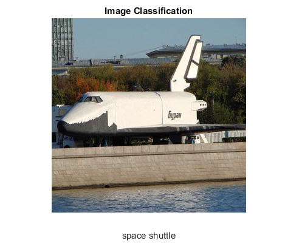

DNN Image Classification
Sources:
- https://github.com/opencv/opencv/blob/3.4.0/samples/dnn/caffe_googlenet.cpp
- https://github.com/opencv/opencv/blob/3.4.0/samples/dnn/googlenet_python.py
- https://github.com/opencv/opencv/blob/3.4.0/samples/dnn/tf_inception.cpp
- https://github.com/opencv/opencv/blob/3.4.0/samples/dnn/squeezenet_halide.cpp
function dnn_image_classification_demo(im, name, crop) % input image (BGR channel order) if nargin < 1 || isempty(im) im = fullfile(mexopencv.root(), 'test', 'space_shuttle.jpg'); end img = cv.imread(im, 'Color',true, 'FlipChannels',false); % import pretrained model if nargin < 2, name = 'GoogLeNet'; end fprintf('Load model... '); tic; switch lower(name) case 'alexnet' % ImageNet ILSVRC 2012 [net, labels, blobOpts] = AlexNet(); case 'caffenet' % ImageNet ILSVRC 2012 [net, labels, blobOpts] = CaffeNet(); case 'vggnet' % ImageNet ILSVRC 2012 [net, labels, blobOpts] = VGGNet(); case 'inception' % ImageNet ILSVRC 2012 [net, labels, blobOpts] = Inception(); case 'googlenet' % ImageNet ILSVRC 2012 [net, labels, blobOpts] = GoogLeNet(); case 'resnet' % ImageNet ILSVRC 2012 [net, labels, blobOpts] = ResNet(); case 'squeezenet' % ImageNet ILSVRC 2012 [net, labels, blobOpts] = SqueezeNet('v1.1'); otherwise error('Unrecognized model %s', name) end toc; assert(~net.empty(), 'Failed to read network %s', name); % feed image to network if nargin < 3, crop = true; end blobOpts = ['Crop',crop, blobOpts]; blob = cv.Net.blobFromImages(img, blobOpts{:}); net.setInput(blob); % run forward pass fprintf('Forward pass... '); tic; prob = net.forward(); % 1-by-nclasses-by-1-by-1 toc; % prepare output image out = flip(img, 3); % BGR to RGB % prediction: image classification and top-5 predictions [~,ord] = sort(prob, 'descend'); disp('Top-5 predictions:') for i=1:5 fprintf('%6.2f%% = %s\n', prob(ord(i))*100, labels{ord(i)}); end imshow(out), title('Image Classification') xlabel(labels{ord(1)}) end % --- Helper functions --- function dname = get_dnn_dir(dname) %GET_DNN_DIR Path to model files, and show where to get them if missing dname = fullfile(mexopencv.root(), 'test', 'dnn', dname); b = isdir(dname); if ~b % display help of calling function % (assumed to be a local function in current file) st = dbstack(1); help([mfilename() filemarker() st(1).name]) end assert(b, 'Missing model: %s', dname); end function labels = readLabels(labelsFile, skipFirstWord) if nargin < 2, skipFirstWord = false; end if ~mexopencv.isOctave() fid = fopen(labelsFile, 'rt'); C = textscan(fid, '%s', 'Delimiter','\n'); fclose(fid); labels = C{1}; else %HACK: textscan is buggy and unreliable in Octave! labels = textread(labelsFile, '%s', 'Delimiter','\n'); end if skipFirstWord labels = regexprep(labels, '^\w+\s*', '', 'once'); end end % --- Pretrained models --- % See also: https://github.com/opencv/opencv_extra/blob/3.3.1/testdata/dnn/download_models.py function [net, labels, blobOpts] = AlexNet() %ALEXNET BAIR/BVLC AlexNet Model [Caffe] % % homepage = https://github.com/BVLC/caffe/tree/master/models/bvlc_alexnet % % ## Model % % file = test/dnn/AlexNet/deploy.prototxt % url = https://github.com/BVLC/caffe/raw/master/models/bvlc_alexnet/deploy.prototxt % hash = cb77655eb4db32c9c47699c6050926f9e0fc476a % % ## Weights % % file = test/dnn/AlexNet/bvlc_alexnet.caffemodel % url = http://dl.caffe.berkeleyvision.org/bvlc_alexnet.caffemodel % hash = 9116a64c0fbe4459d18f4bb6b56d647b63920377 % size = 232 MB % % ## Classes % % file = test/dnn/AlexNet/synset_words.txt % url = https://github.com/opencv/opencv/raw/3.3.1/samples/data/dnn/synset_words.txt % dname = get_dnn_dir('AlexNet'); net = cv.Net('Caffe', ... fullfile(dname, 'deploy.prototxt'), ... fullfile(dname, 'bvlc_alexnet.caffemodel')); labels = readLabels(fullfile(dname, 'synset_words.txt'), true); blobOpts = {'SwapRB',false, 'Size',[227 227], 'Mean',[104 117 123]}; end function [net, labels, blobOpts] = CaffeNet() %CAFFENET BAIR/BVLC CaffeNet Model, a replication of AlexNet with some modification [Caffe] % % homepage = https://github.com/BVLC/caffe/tree/master/models/bvlc_reference_caffenet % % ## Model % % file = test/dnn/CaffeNet/deploy.prototxt % url = https://github.com/BVLC/caffe/raw/master/models/bvlc_reference_caffenet/deploy.prototxt % hash = 6a40fd8b77233afee8fd525ce59bb4ccaae78d58 % % ## Weights % % file = test/dnn/CaffeNet/bvlc_reference_caffenet.caffemodel % url = http://dl.caffe.berkeleyvision.org/bvlc_reference_caffenet.caffemodel % hash = 4c8d77deb20ea792f84eb5e6d0a11ca0a8660a46 % size = 232 MB % % ## Classes % % file = test/dnn/CaffeNet/synset_words.txt % url = https://github.com/opencv/opencv/raw/3.3.1/samples/data/dnn/synset_words.txt % dname = get_dnn_dir('CaffeNet'); net = cv.Net('Caffe', ... fullfile(dname, 'deploy.prototxt'), ... fullfile(dname, 'bvlc_reference_caffenet.caffemodel')); labels = readLabels(fullfile(dname, 'synset_words.txt'), true); blobOpts = {'SwapRB',false, 'Size',[227 227], 'Mean',[104 117 123]}; end function [net, labels, blobOpts] = VGGNet() %VGGNET VGG team ILSVRC-2014 16-layer model [Caffe] % % homepage = http://www.robots.ox.ac.uk/~vgg/research/very_deep/ % % ## Model % % file = test/dnn/VGGNet/VGG_ILSVRC_16_layers_deploy.prototxt % url = https://gist.githubusercontent.com/ksimonyan/211839e770f7b538e2d8/raw/0067c9b32f60362c74f4c445a080beed06b07eb3/VGG_ILSVRC_16_layers_deploy.prototxt % hash = 2734e5500f1445bd7c9fee540c99f522485247bd % % ## Weights % % file = test/dnn/VGGNet/VGG_ILSVRC_16_layers.caffemodel % url = http://www.robots.ox.ac.uk/~vgg/software/very_deep/caffe/VGG_ILSVRC_16_layers.caffemodel % hash = 9363e1f6d65f7dba68c4f27a1e62105cdf6c4e24 % size = 527 MB % % ## Classes % % file = test/dnn/VGGNet/synset_words.txt % url = https://github.com/opencv/opencv/raw/3.3.1/samples/data/dnn/synset_words.txt % dname = get_dnn_dir('VGGNet'); net = cv.Net('Caffe', ... fullfile(dname, 'VGG_ILSVRC_16_layers_deploy.prototxt'), ... fullfile(dname, 'VGG_ILSVRC_16_layers.caffemodel')); labels = readLabels(fullfile(dname, 'synset_words.txt'), true); blobOpts = {'SwapRB',false, 'Size',[224 224], 'Mean',[103.939 116.779 123.68]}; end function [net, labels, blobOpts] = Inception() %INCEPTION Google Inception V1 model [TensorFlow] % % homepage = https://github.com/tensorflow/tensorflow % % ## Model + Weights + Classes % % file = test/dnn/Inception/tensorflow_inception_graph.pb % file = test/dnn/Inception/imagenet_comp_graph_label_strings.txt % url = https://storage.googleapis.com/download.tensorflow.org/models/inception5h.zip % hash = e3b84c7e240ce8025b30d868f5e840b4bba9761d % size = 47.6 MB % dname = get_dnn_dir('Inception'); net = cv.Net('Tensorflow', ... fullfile(dname, 'tensorflow_inception_graph.pb')); labels = readLabels(fullfile(dname, 'imagenet_comp_graph_label_strings.txt'), false); blobOpts = {'SwapRB',true, 'Size',[224 224], 'Mean',[117 117 117]}; end function [net, labels, blobOpts] = GoogLeNet() %GOOGLENET BAIR/BVLC GoogleNet Model, a Caffe implementation of Inception model [Caffe] % % homepage = https://github.com/BVLC/caffe/tree/master/models/bvlc_googlenet % % ## Model % % file = test/dnn/GoogLeNet/deploy.prototxt % url = https://github.com/BVLC/caffe/raw/master/models/bvlc_googlenet/deploy.prototxt % hash = 7060345c8012294baa60eeb5901d2d3fd89d75fc % % ## Weights % % file = test/dnn/GoogLeNet/bvlc_googlenet.caffemodel % url = http://dl.caffe.berkeleyvision.org/bvlc_googlenet.caffemodel % hash = 405fc5acd08a3bb12de8ee5e23a96bec22f08204 % size = 51 MB % % ## Classes % % file = test/dnn/GoogLeNet/synset_words.txt % url = https://github.com/opencv/opencv/raw/3.3.1/samples/data/dnn/synset_words.txt % dname = get_dnn_dir('GoogLeNet'); net = cv.Net('Caffe', ... fullfile(dname, 'deploy.prototxt'), ... fullfile(dname, 'bvlc_googlenet.caffemodel')); labels = readLabels(fullfile(dname, 'synset_words.txt'), true); blobOpts = {'SwapRB',false, 'Size',[224 224], 'Mean',[104 117 123]}; end function [net, labels, blobOpts] = ResNet() %RESNET Deep Residual Networks, ResNet-50 [Caffe] % % homepage = https://github.com/KaimingHe/deep-residual-networks % % ## Model % % file = test/dnn/ResNet/ResNet-50-deploy.prototxt % url = https://onedrive.live.com/?authkey=%21AAFW2-FVoxeVRck&id=4006CBB8476FF777%2117887&cid=4006CBB8476FF777 % hash = 5d6fd5aeadd8d4684843c5028b4e5672b9e51638 % % ## Weights % % file = test/dnn/ResNet/ResNet-50-model.caffemodel % url = https://onedrive.live.com/?authkey=%21AAFW2-FVoxeVRck&id=4006CBB8476FF777%2117887&cid=4006CBB8476FF777 % hash = b7c79ccc21ad0479cddc0dd78b1d20c4d722908d % size = 97.7 MB % % ## Classes % % file = test/dnn/ResNet/synset_words.txt % url = https://github.com/opencv/opencv/raw/3.3.1/samples/data/dnn/synset_words.txt % dname = get_dnn_dir('ResNet'); net = cv.Net('Caffe', ... fullfile(dname, 'ResNet-50-deploy.prototxt'), ... fullfile(dname, 'ResNet-50-model.caffemodel')); labels = readLabels(fullfile(dname, 'synset_words.txt'), true); blobOpts = {'SwapRB',false, 'Size',[224 224], 'Mean',[104 117 123]}; %TODO: mean image from ResNet_mean.binaryproto end function [net, labels, blobOpts] = SqueezeNet(v) %SQUEEZENET SqueezeNet [Caffe] % % homepage = https://github.com/DeepScale/SqueezeNet % % # SqueezeNet v1.0 % % ## Model % % file = test/dnn/SqueezeNet/v1.0/deploy.prototxt % url = https://github.com/DeepScale/SqueezeNet/raw/master/SqueezeNet_v1.0/deploy.prototxt % hash = 733249be856b9cd28ce929cd7c41874cf817c3c6 % % ## Weights % % file = test/dnn/SqueezeNet/v1.0/squeezenet_v1.0.caffemodel % url = https://github.com/DeepScale/SqueezeNet/raw/master/SqueezeNet_v1.0/squeezenet_v1.0.caffemodel % hash = 579d0beb658e43c45937bf8bb5e4034fea4e1f69 % size = 4.76 MB % % # SqueezeNet v1.1 % % ## Model % % file = test/dnn/SqueezeNet/v1.1/deploy.prototxt % url = https://github.com/DeepScale/SqueezeNet/raw/master/SqueezeNet_v1.1/deploy.prototxt % hash = c226bbaaa4d83e2a3d3727618091e897e5f2e3aa % % ## Weights % % file = test/dnn/SqueezeNet/v1.1/squeezenet_v1.1.caffemodel % url = https://github.com/DeepScale/SqueezeNet/raw/master/SqueezeNet_v1.1/squeezenet_v1.1.caffemodel % hash = 3397f026368a45ae236403ccc81cfcbe8ebe1bd0 % size = 4.72 MB % % # Classes % % file = test/dnn/SqueezeNet/v1.x/synset_words.txt % url = https://github.com/opencv/opencv/raw/3.3.1/samples/data/dnn/synset_words.txt % v = validatestring(v, {'v1.1', 'v1.0'}); dname = get_dnn_dir(fullfile('SqueezeNet', v)); if strcmp(v, 'v1.1') net = cv.Net('Caffe', ... fullfile(dname, 'deploy.prototxt'), ... fullfile(dname, 'squeezenet_v1.1.caffemodel')); else net = cv.Net('Caffe', ... fullfile(dname, 'deploy.prototxt'), ... fullfile(dname, 'squeezenet_v1.0.caffemodel')); end labels = readLabels(fullfile(dname, 'synset_words.txt'), true); blobOpts = {'SwapRB',false, 'Size',[227 227], 'Mean',[104 117 123]}; end
Load model... Elapsed time is 0.197234 seconds. Forward pass... Elapsed time is 0.113284 seconds. Top-5 predictions: 99.99% = space shuttle 0.00% = airliner 0.00% = submarine, pigboat, sub, U-boat 0.00% = bullet train, bullet 0.00% = missile